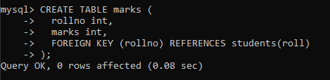

Foreign Key
A foreign key is a column or set of columns in one table that refers to the
primary key of another table. It is used to establish a link between the
data in two tables and enforce referential integrity. The foreign key
constraints ensure that the values inserted in the referencing table
(child table) must match the values in the referenced table (parent table).
Here are some important points to remember while working with foreign keys
in MySQL:
-
A foreign key can be defined using the FOREIGN KEY constraint.
-
The referenced table must have a primary key or a unique key constraint
on the column(s) being referenced.
-
The foreign key constraint can be added while creating a table or
altering an existing table.
-
Datatypes of the columns of the parent table and the child table must be same.
-
A foreign key constraint can be named using the CONSTRAINT
keyword.
-
The ON DELETE and ON UPDATE clauses can be used
to specify what happens when a referenced row is deleted or updated.
-
The CASCADE option can be used to automatically delete or
update the referencing rows when a referenced row is deleted or updated.
Syntax :
mysql> create table table_name (col_name datatype, col_name datatype,... , foreign key (col_name) references parent_table(col_name) );
Example :
